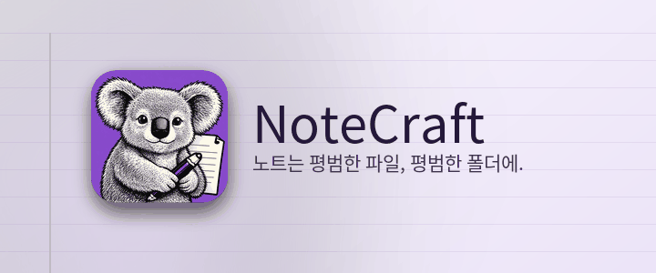

노트는 평범한 파일, 평범한 폴더에.
NoteCraft는 여러분이 파일을 보관하듯 노트를 보관합니다. 노트북은 폴더이고, 섹션도 폴더이고, 페이지는 파일 하나와 그 그림들이 들어 있는 폴더입니다. 데이터베이스에 갇힌 것은 아무것도 없으므로, 동기화 도구가 이미 지켜보는 폴더라면 무엇이든 동기화된 노트북이 되고, 백업은 복사본 하나로 끝납니다.
이 섹션의 각 페이지는 NoteCraft의 한 부분을 페이지 위에서 직접 보여 줍니다.
이 문단 아무 곳이나 클릭하고 입력하세요. 입력을 멈춘 뒤 약 1초 만에 페이지가 저장됩니다. 줄 끝에서 Enter를 누르면 새 문단, Escape를 누르면 줄에서 나갑니다.
시작 페이지로 돌아가기.
이 페이지는 AI 모델이 번역했습니다. 수정 제안을 환영합니다.